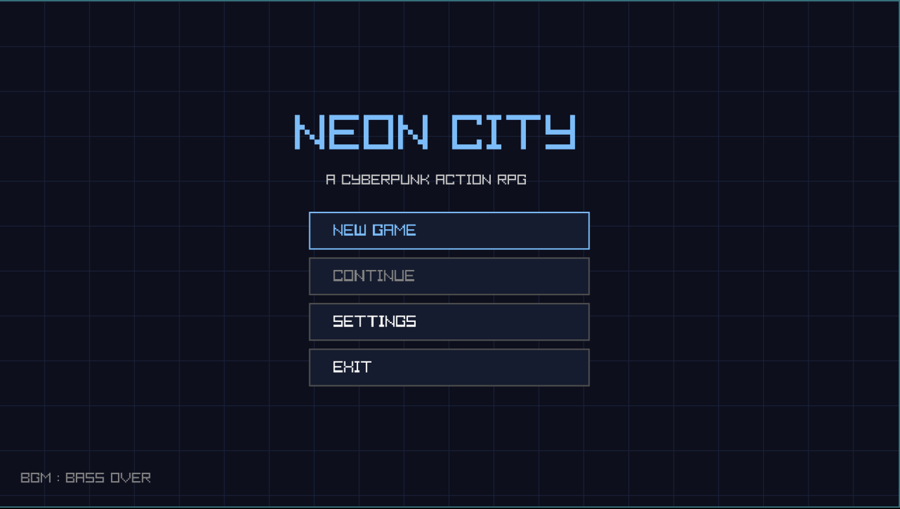
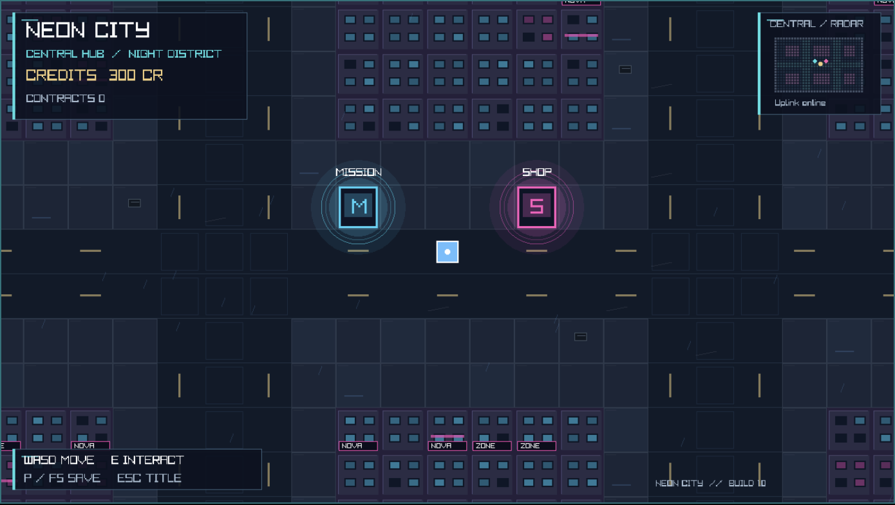
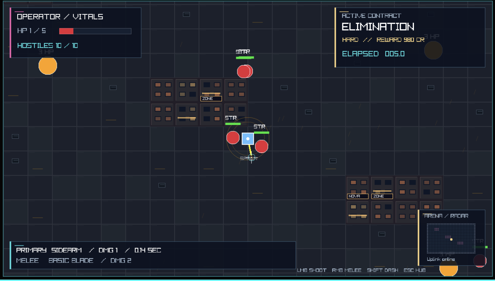

自動生成ミッション
殲滅・生存・タイムアタックの依頼候補を生成。難易度、敵構成、報酬などに変化を持たせています。
ソースコードで実装を確認
PCのキーボード・マウスでプレイできます。別タブで開きます。
NEON CITYは、C言語とraylibを用いた2Dアクションゲームです。拠点の端末でミッションを選び、戦闘で得たCreditsをショップでの装備購入・強化に使う構成です。
ステージごとにBGMを変え、音楽でも場面の違いを感じられるゲーム体験へ発展させる構想があります。
タイトルから拠点、戦闘へ。実際のゲーム画面を紹介します。画像をクリックすると別タブで拡大できます。

01 / TITLE
新規ゲーム、コンティニュー、設定を選ぶタイトル画面。ネオン調の配色でゲームの世界観を示し、制作楽曲「Bass Over」をBGMとして再生します。

02 / CENTRAL HUB
ミッション端末とショップ端末が並ぶ拠点エリア。依頼の選択や装備の購入・強化を行います。所持Creditsと契約数を左上に、プレイヤーと端末の位置を簡易マップに表示しています。

03 / COMBAT
ミッションに挑戦する戦闘エリア。射撃・近接攻撃・ダッシュを使い分けて敵と戦います。HPと敵数、契約の種類・報酬・経過時間、装備情報をHUDに分けて表示しています。
Ver.1.0のソースコードで以下の機能を確認しています。ブラウザ版は、ページ上部の「ブラウザで遊ぶ」から起動できます。
殲滅・生存・タイムアタックの依頼候補を生成。難易度、敵構成、報酬などに変化を持たせています。
ソースコードで実装を確認
マウスによる射撃・近接攻撃とダッシュを組み合わせて戦闘。ショップでは装備の購入・強化を行えます。
ソースコードで実装を確認
HP、Credits、装備、ミッション情報、簡易マップを表示。街にはネオン看板や雨の表現を取り入れています。
ソースコードで実装を確認
タイトル・メニュー画面では、制作楽曲「Bass Over」をループ再生します。エリア別BGMへの切り替えは、現在のゲームコードには含まれていません。
STAGE × MUSIC
ステージごとに異なるBGMを用意し、各場面の雰囲気を音楽で表現することを構想しています。ゲームの展開と音楽が結びつく体験を目指します。
構想段階・実装済み機能ではありません